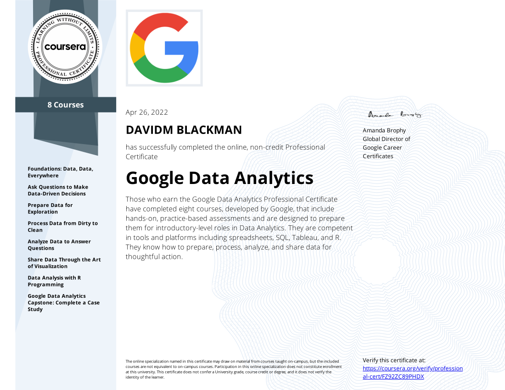

David M Blackman
Email: david.blackman.career@gmail.com
Phone: 607-843-8632
City: Oxford, Ny 13830
Github: defenstration
LinkedIn: https://www.linkedin.com/in/david-blackman-494212231/
Summary
Highly experienced manufacturing specialist transitioning into a more technical role in web development and graphic design. Current projects include designing assets for tabletop role playing games, designing a website for table top role playing game asset distribution, and hosting a Magic The Gathering podcast and youtube channel.
Work Experience
Chenango County Department Of Public Works - Waste Program Management Assistant
Norwich, Ny
- Substantially improved monthly reporting by creating a Microsoft Excel spreadsheet that reduced the required inputs from 30 seperate reports to a single input.
- Coordinate recycling efforts between two local transfer stations and one local landfill.
- Monitor material markets for recycled products to determine the most optimal time to sell gathered recyclables.
- Negotiate pricing of sold material and purchased landfill machinery.
Bloom Owl - Assistant Production Manager
Norwich, Ny
- Coordinate product flow from order creation through fullfillment.
- Led project to implement ERP manufacturing system which included a full inventory audit, BOM creation, and developing standard work.
- Used Python and Microsoft Excel to create a program to capture activities and track production times.
Amphenol Aerospace - CNC Machinist
Sidney, Ny
- Operate various CNC machines to fabricate precision components.
- Write and modify machine code to facilitate efficient machine setup and changeover.
- Collaborate with expediters and team leads to prioritize job selections and ensure maximum machine uptime.
The Raymond Corporation - Manufacturing Supervisor
Greene, Ny
- Led team of 31 direct reports.
- Boosted fabrication team performance by 31% over a six-month time frame through communcatino training and enchacing team engagement through projects.
- Coordinated machine schedules to minimize disruption impact from preventive maintenance activites and unplanned breakdowns.
- Piloted Toyota's first and only off-shift institution of Toyota Quality Control Circles.
- Participant of the Toyota Motor Handling North America leadership training curriculum.
GE Aerospace - Welder
Norwich, Ny
- Leveraged Oracle ERP and Spotfire software to determine optimal work order lot sizes, release work orders optimally, set manufacturing schedules, and expedite assemblies to achieve a high level of customer satisfaction.
- Drove a 60% reduction in aged WIP workorders through improved work order tracing and value stream coordination.
- Led the interview process with prospective employees and department onboarding programs.
- Improved cycle time of hey assembly by 30% and generated 12 million in revenue over a 10-month time frame by improving standard work and rework processes.
- Graduate of GE Lean Academy, a one-week intensive course on the lean management methodology.
Education
Bachelor of Science - Business, Management, and Economics
Certificate in Manufacturing Manangement
Saratoga Spring, Ny
Associate of Occupational Science - Welding Technology
Associate of Occupation Science - Individual Studies
Certificate in CNC Machining Technology
Utica, Ny
Data Analytics Professional Certificate

Skills